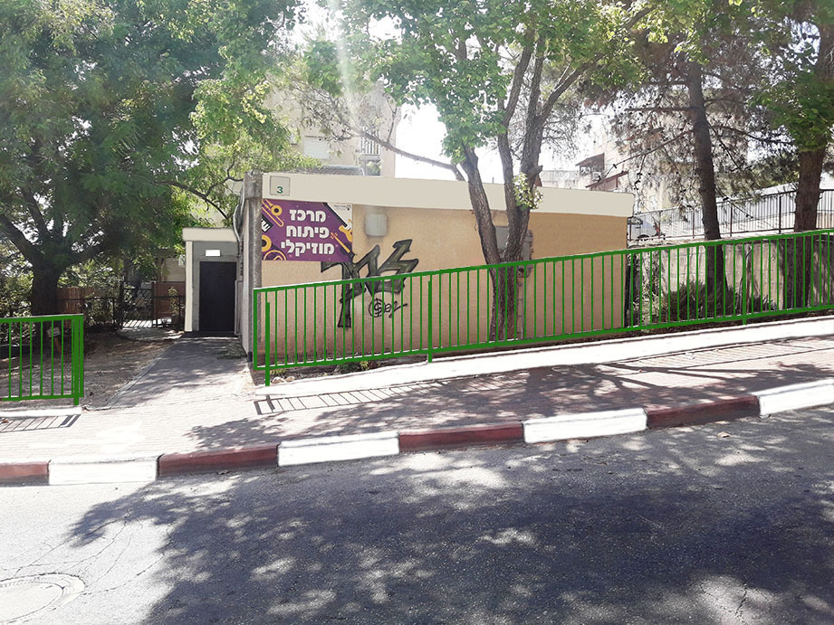

|
ЦЕНТР РАЗВИТИЯ ТВОРЧЕСТВА.
Добро пожаловать на наш сайт!

.
Мы здесь, что бы быть полезными для Вас. Поможем Вам реализовать свои возможности и освоить один из видов предлагаемых проектов.
Наш центр существует восемь лет. За это время на компьютерных курсах прошло обучение более 270 детей и взрослых.
У нас можно обучиться игре на гитаре, синтезаторе, аккордеоне, баяне и ударной установке как для детей, так и взрослых. Так же имеются группы
обучения вокалу. Все курсы постоянно действующие. Наша гордость - музыкальная группа "Мигдал Бэнд", где живая музыка и вокал. Постоянно
работаем над повышением уровня игры в нашем оркестре и вокального исполнения. Сегодня уже третий состав этого коллектива.
Для более подробного ознакомления с каждым проектом, нажмите на интересующий вас проект в меню внизу слева.
|